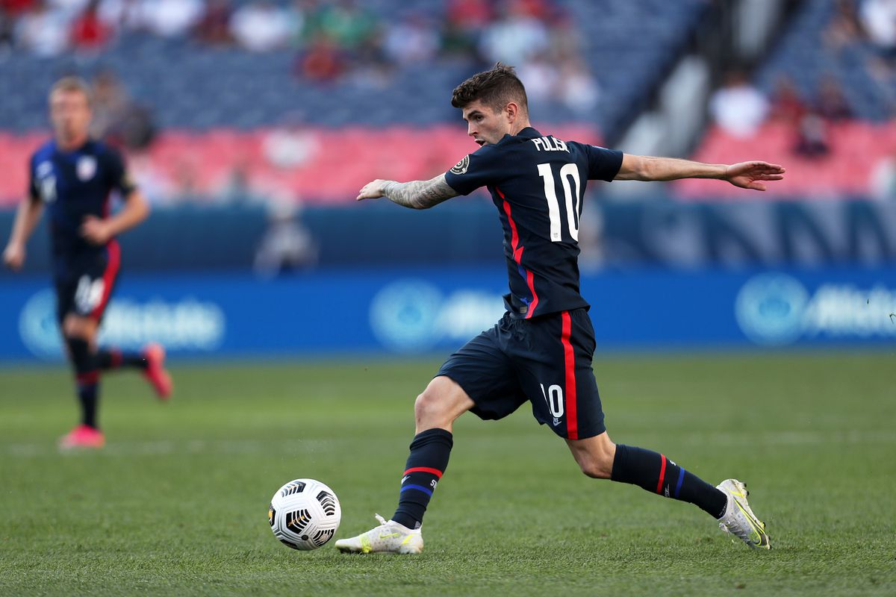
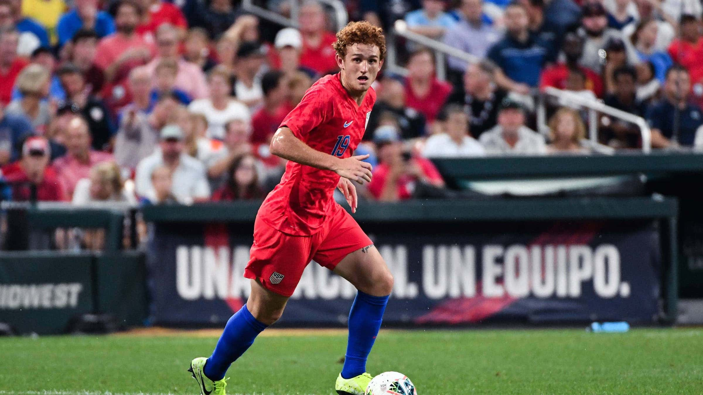
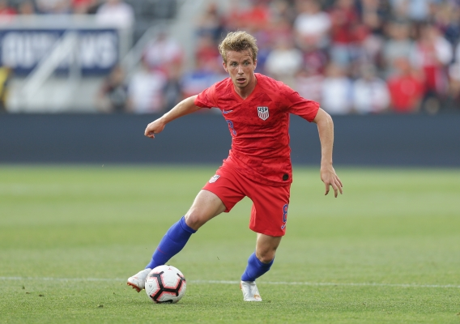

-
USMNT Scrapes By Honduras In Nations League
by Mitchel Green - June 3, 2021
|
mitchgr@umich.edu

Final Score: USA 1-0 Honduras
The first meaningful match for the US Men’s National Team in 562 days came in the form of a long-awaited Nations League semifinal with Honduras. It was a chance to see the (almost) whole new core finally take the field together in a competitive format. It wasn’t pretty, but the team got the job done and it showed signs of potential. As usual when I cover the US, none of my takeaways will be about the opponent (sorry to our huge Honduran readership). Here are five key takeaways from the match:
1. This Team Needs A Creative Passer
Your team has a huge problem when your best creative passing threat is one of the centerbacks. All due respect to John Brooks, who helped create the USA's only goal of the night with a nice chip into the box to set up an assist from Weston McKennie, but if they are relying on him to be the playmaker going forward, this team will have a lot of issues. The role is technically being filled at the moment by Sebastian Lletget, and he is fine for now, but if the US really wants to make a statement at the World Cup next year, they are going to need to find some creative passing from somewhere else. Christian Pulisic and Gio Reyna are excellent ball carriers, and can even create their own shots at times, but the offense stagnates when they have to slow the tempo and break down an opponent. A playmaking passer would help this immensely, and given that they are going to come up in these situations a lot in qualifying, the US is going to need one as soon as possible.
2. Josh Sargent Adds Very Little To This Team
Josh Sargent was not very good with Werder Bremen this season. It was a bit worrying to watch as a fan of the US as he looks like Gregg Berhalter’s first choice striker at the moment. But there was always a lingering hope that his struggles could be chalked up to Bremen’s inability to create anything for him on offense. Ultimately you want a striker that can create his own shots, but at just 21 he has plenty of time to develop that. But until then, he needs support, and Bremen just isn’t giving that to him. The hope among US fans was that this would be alleviated with the US as we would be able to create more for him, but as we covered above our creative passing is leaving a lot to be desired. And as a result, Josh Sargent adds very little value to the USMNT right now. A nice hustle play to clear the ball off the goalline was a highlight for him, but apart from that he rarely was involved in possession play, his solid defensive attributes were of no use in a game where his team dominated the ball, and he just didn’t get in good positions for his teammates to get him the ball. He is far from locked in as the starting number 9, and with Jordan Siebatcheu scoring off the bench as a sub, Sargent has some work to do if he wants to keep his place in the team.

3. Jackson Yueill Cannot Play As The Lone Pivot
The US has found their Michael Bradley 2.0, and not in a good way. With Tyler Adams still not fully recovered from injury, Jackson Yueill was once again given the start at the base of the midfield three after a sub-par performance in the Switzerland friendly. All of the issues from the friendly were on display again against Honduras — the reluctance to play valuable progressive passes and instead opt for safe sideways and backwards passes, the lack of athleticism causing an inability to play good transition defense, and a lack of strength and aggression to win the ball back when he finally did get in the right positions on defense. It was a performance very reminiscent of Jorginho when he plays as a lone pivot for Chelsea. And perhaps if Yueill was partnering Tyler Adams he would look a bit better, just as Jorginho does when partnered by N’Golo Kante, but given the other options in midfield for the US, a lone defensive midfielder is probably the way to go. And if that’s the case, there is no place for Jackson Yueill in this team.

4. Get Christian Pulisic The Ball Further Up The Field
Apart from one good chance that Pulisic shot right at the goalkeeper, Christian Pulisic didn’t get the ball very much in the opening 20 or so minutes of the first half. The midfield three was struggling to progress the ball into the final third (something that perhaps could have been remedied by a player on the bench like Yunus Musah), and as a result Pulisic was not getting the ball as much as a player of his caliber should have been. Around this time, the winger started dropping deeper into midfield to pick up the ball and carry it forward. While this did help the team’s ball progression, it also took away the team’s biggest goal threat in the attacking third. Playing Pulisic in either role is fine, but you need to have a player that brings what the Chelsea man does either in terms of goal threat or ball progression. Given the US’s options, it seems the easiest way for them to do that is bring in a progressive midfielder. Once they do this, it is crucial to get Christian Pulisic the ball in areas where he can attack the opponents’ goal.
5. CBS’s Coverage Is Embarrassingly Amateurish
I have no recollection of whether or not CBS had previously aired soccer on their network before this year, but if they had, it sure didn’t look like it. From the beginning, the coverage of the match looked like one giant advertisement for Paramount+ (a streaming service nobody wants and nobody asked for). This wouldn’t be as big of a deal if it wasn’t one of the worst advertisements for a streaming service I’ve ever seen. Despite pulling in USMNT legend Clint Dempsey, the commentary team was weak with dull, surface-level analysis. The camerawork was abhorrent, making the match look fuzzy even when watching in HD, thanks in part to the enormous shadow cast by Mile High Stadium. The sound wasn’t particularly good or bad, but it seemed extremely unprofessional when a telephone was allowed to ring in range of the microphones for almost a minute towards the end of the first half. ViacomCBS is going to be showing a lot of soccer in the coming years — including the Champions League — but if their coverage continues to be this low in quality, we soccer fans in the US should be very worried.